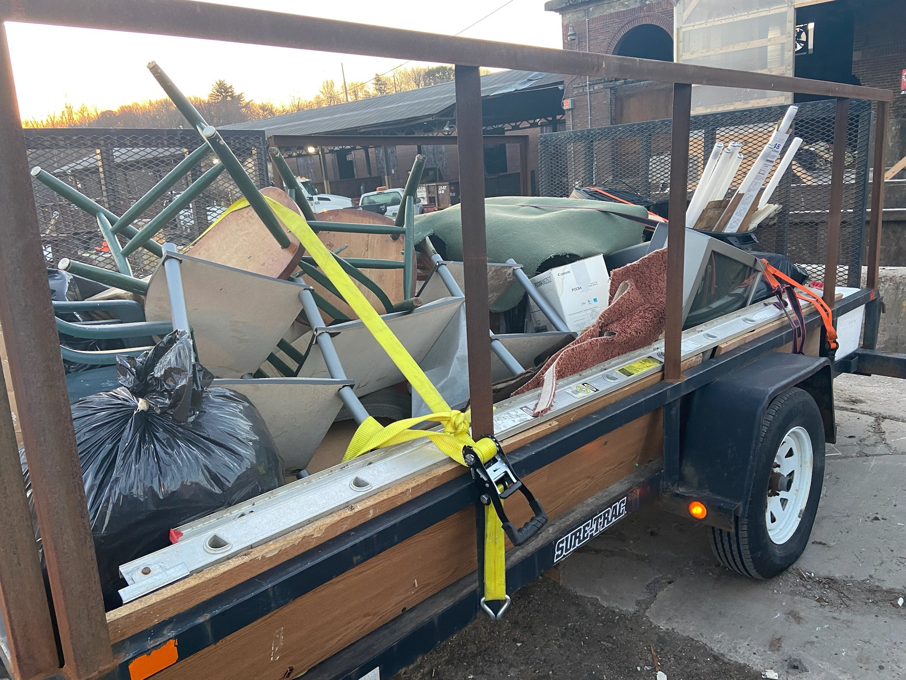
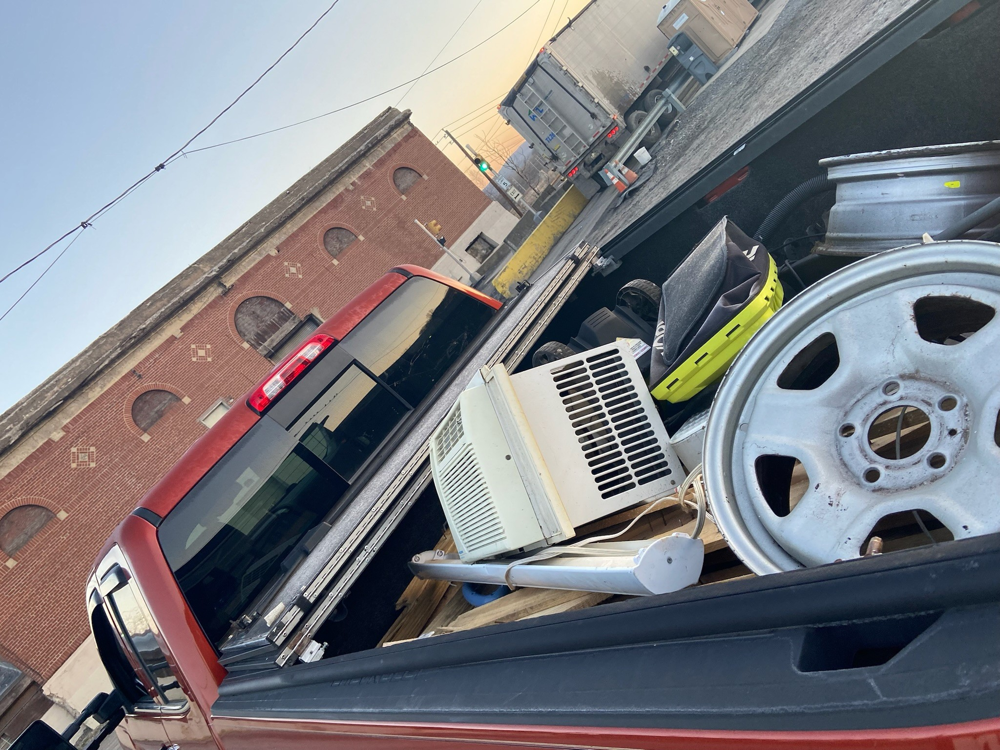
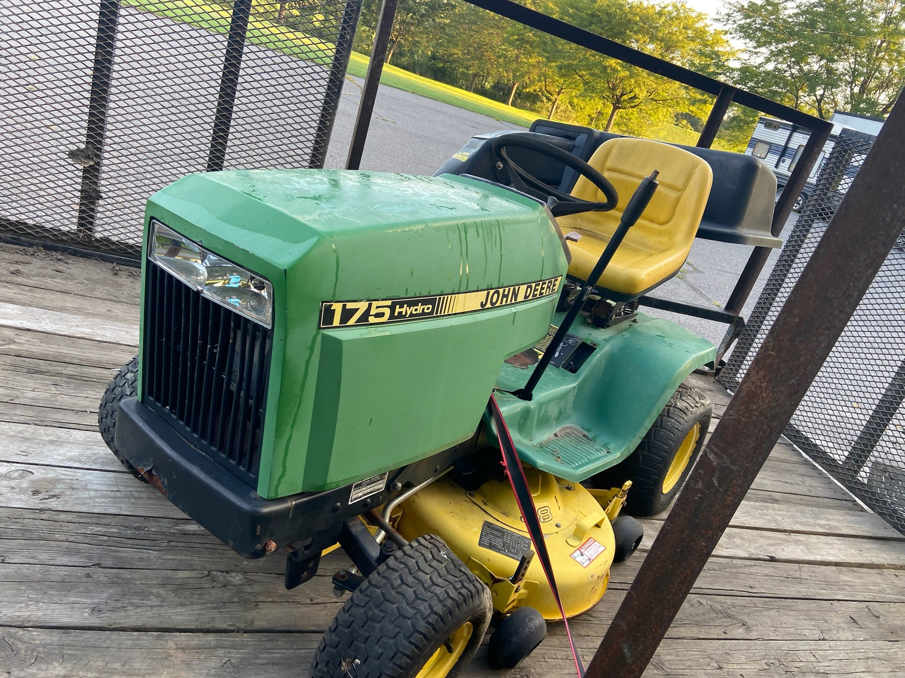
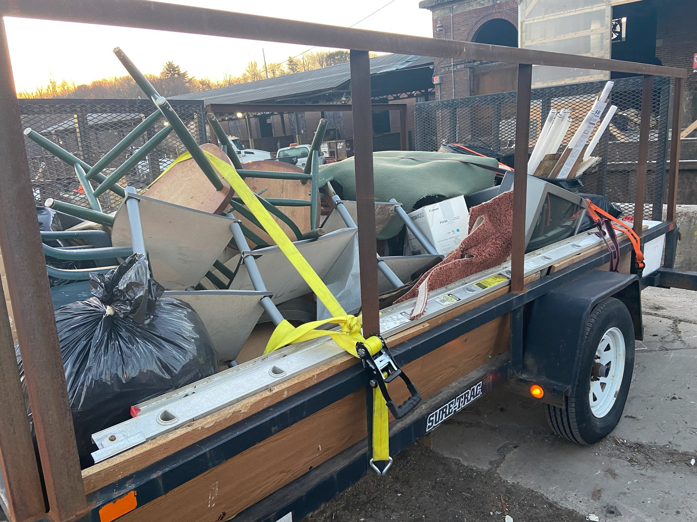
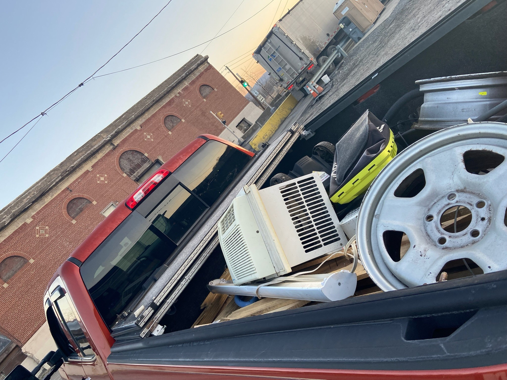
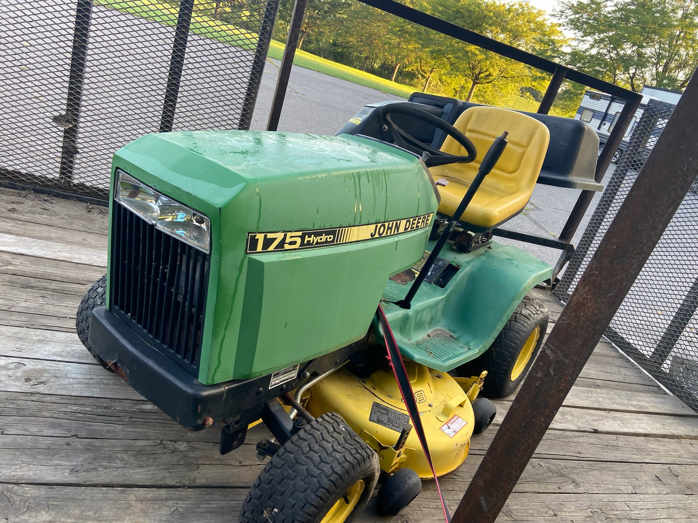
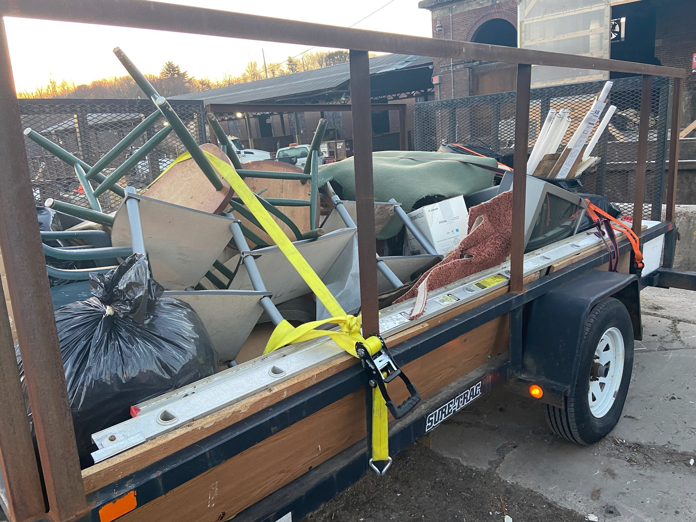
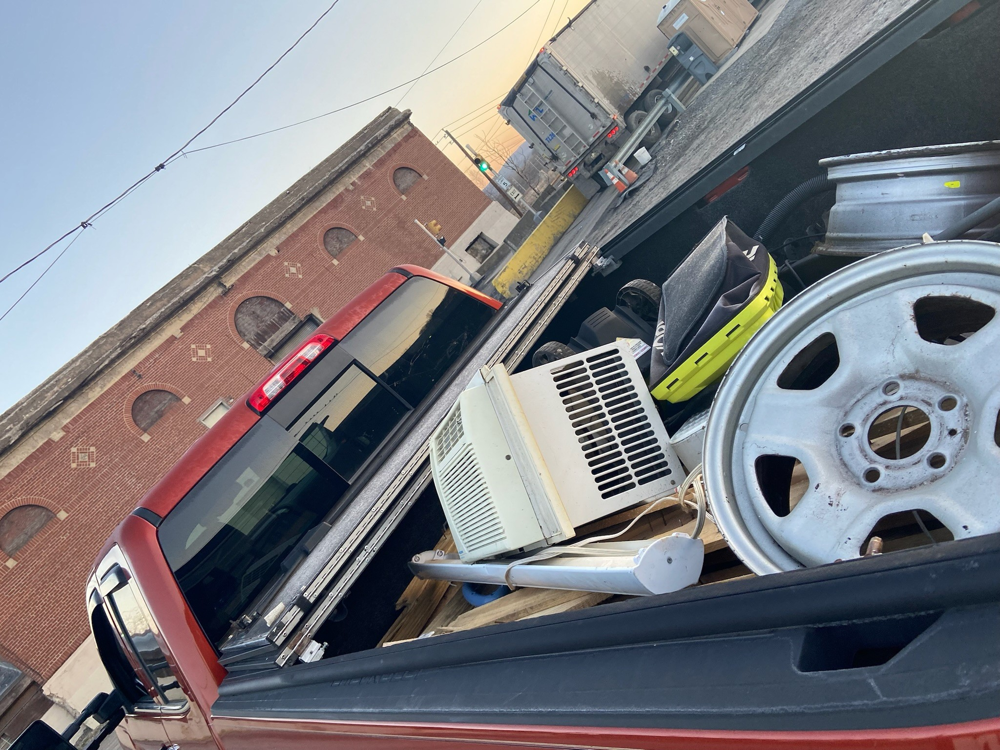
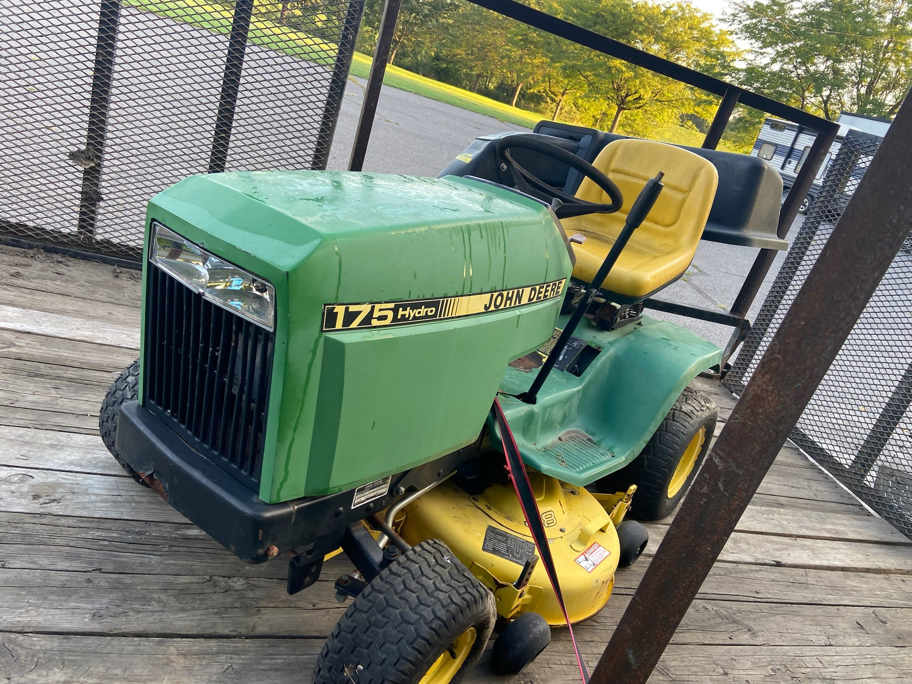

Gallery: Before & After Jobs


 





"Are you in need of a good dump?"
Serving Luzerne and Lackawanna County
Phone: (570)-846-7988 | Email: jaysjunkremoval7@gmail.com
We are proud to serve Luzerne and Lackawanna County, primarily within a 5-mile radius of Wilkes-Barre, PA 18702. Services outside this area may be available upon request with additional charges.
Jay's Junk Removal was founded on the belief that everyone deserves a clean, clutter-free space without the hassle or high prices. Locally owned and operated in Luzerne County, Jay started this business with just a truck, a strong back, and a desire to help the community.
What started with word-of-mouth referrals has grown into a reliable, go-to service trusted by homeowners, landlords, and local businesses alike. Whether it’s a full home cleanout or just a couple of items, Jay’s team handles every job with care, respect, and a can-do attitude.
Jay is a local resident with a passion for hard work and helping others. Known for his honesty and no-nonsense approach, he’s the one you can count on to get the job done right — and fast.
At Jay's Junk Removal, our mission is simple: offer the best prices with top-notch work ethic, ensuring every job is completed quickly, efficiently, and with a smile. We pride ourselves on delivering quality service with unbeatable value. We want to make junk removal stress-free, affordable, and reliable — all while treating your space like it’s our own. — that's Jay's way!
Note: Prices may vary based on item weight, size, and location. For example, construction material is heavier than household material; 10 cubic yards will weigh more than 2000 pounds. This will be pro-rated by weight.
If you're looking to freshen up your garden beds with mulch, we offer competitive landscaping services that include weeding, edging, weed treatment, and removal of old mulch.
💰 General Pricing:
We charge approximately $100 per yard of mulch. This covers all labor and materials, including:
Mulch prices vary by type:
• Standard colored mulch: $42/yard
• Premium hemlock mulch: $62/yard
📏 How Much Mulch Do You Need?
The best way to estimate how much mulch you need is to measure the square footage of your garden bed.
At a 3-inch depth, one yard of mulch covers approximately 100 square feet. That means one yard would fill a 10ft x 10ft area.
If you're not sure how much you need, we’re happy to help calculate and provide a quote!
Effective Date: 08/01/2024
Welcome to Jay's Junk Removal! By using our junk removal services, you agree to the following Terms and Conditions:
Services include the removal of household items, construction debris, and yard waste within a 5-mile radius of Wilkes-Barre, PA. Additional charges may apply outside this area.
Appointments require a $50 refundable deposit. Cancellations must be made 24 hours in advance to avoid losing the deposit.
Pricing based on volume and type of junk. Payment is due upon service completion. Accepted payments: cash, check, CashApp, Paypal.
Customers must provide clear access to junk. Extra charges may apply if access is limited.
No hazardous materials, flammable items, or restricted waste will be removed without special arrangements.
We are not liable for pre-existing damages. Liability is limited to the service amount paid.
Contact us within 24 hours if unsatisfied. Refunds may be issued at our discretion.
Your personal data is protected and never sold or shared.
We may update terms at any time. The latest version will apply at the time of deposit.
All disputes will be handled in Pennsylvania courts.
Jay’s Junk Removal LLC
572 Plymouth St, Hanover Township, PA 18706
(570) 846-7988
jaysjunkremoval7@gmail.com


